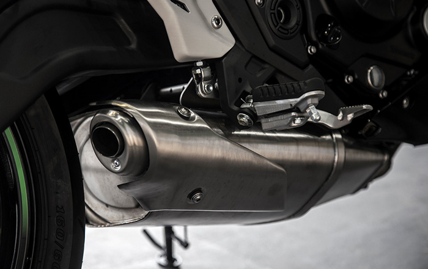

Kawasaki Ninja 650 là dòng xe thể thao phù hợp sử dụng đi làm hàng ngày bởi kiểu thiết kế lai giữa naked bike và sport bike, tay lái cao, chỗ ngồi thoải mái.
Những chiếc xe thể thao thuần chủng không phù hợp để sử dụng hàng ngày, trong khi naked bike lại không đủ bóng bẩy, đó là lý do dòng sport city ra đời. Kawasaki Ninja 650 được xem là đứa con lai giữa sport và naked, vừa đảm bảo vận hành mạnh mẽ, thể thao nhưng cũng thoải mái để dùng đi làm mỗi ngày.
Về kiểu dáng, chiếc xe chịu ảnh hưởng nhiều của đàn anh ZX-10R với những đường cắt cạnh sắc sảo. Đèn pha thấp hơn, mặt nạ tương tự đàn em Ninja 300 nhưng được phóng lớn thêm. Đặc biệt là chi tiết như cặp môi bên dưới đèn pha hơi chìa ra phía trước.
Với độ cao tổng thể 1.135 mm, Ninja 650 thấp hơn so với thế hệ trước (1.180 mm), khiến chiếc xe trông hài hoà, thể thao hơn.
Bình xăng như bướu lạc đà trên thế hệ cũ đã được thay thế bằng bình xăng kiểu lõm vào rất dễ chịu. Bình xăng không quá cao và ép bụng như những chiếc xe thể thao thuần tuý, giúp việc vận hành trong thành phố dễ dàng hơn. Ngoài ra, kiểu thiết kế này còn giúp người lái đặt một chiếc ba-lô hoặc túi đồ nghề bên trên dễ dàng hơn. Hai bên hông cũng được làm lõm vào để kẹp chân.
Đồng hồ hoàn toàn mới và trông đẹp hơn, nhờ cách bố trí đơn giản với màn hình lớn. Đồng hồ báo tua máy lớn ở bên trái và một màn hình LCD bên phải hiển thị các thông số hành trình. Đặc biệt, kim chỉ vận tốc máy sẽ chuyển từ trắng sang hồng và cuối cùng là màu đỏ khi tốc độ vòng tua tăng lên, nhằm thu hút sự chú ý.
Xe vẫn sử dụng ống xả dưới gầm và âm thanh không nhiều thay đổi so với thế hệ trước. Khi mua chiếc xe này, hãng sẽ hỗ trợ bán giảm giá ống xả Akrapovic nhẹ hơn, âm thanh uy lực hơn nhằm bù lại phần kém hấp dẫn trên chiếc xe nguyên bản.
Đèn đuôi LED hình chữ X trông bắt mắt. Quan trọng nhất, chiếc Ninja 650 nhẹ hơn 18 kg so với thế hệ cũ. Khung gầm mới nhẹ hơn, xử lý tốt hơn và trông đẹp hơn hẳn.
Hệ thống treo monoshock phía sau ngược với bản cũ và được gắn trực tiếp vào khung. Bánh xe, động cơ và nhiều bộ phận khác cũng được giảm trọng lượng. Ngoài màu đen và xanh lá cây, mẫu xe này cũng được cung cấp bản KRT, một bộ tem lấy cảm hứng từ xe đua của Kawasaki.
Chiều cao yên được giảm từ 805 mm xuống 790 mm, giúp đa phần đàn ông châu Á đều có thể ngồi và điều khiển dễ dàng. Trọng lượng xe cũng chỉ 193 kg, giảm 18 kg so với trước. Tất nhiên con số này vẫn còn quá lớn so với một mẫu xe thể thao.
Tay lái cao, tư thế ngồi thẳng lưng, cổ tay bạn không bị quá mỏi khi đi làm hàng ngày ở thành phố. Gác chân cũng được hạ thấp 15 mm cho cảm giác duỗi chân tốt hơn.
Xe sử dụng động cơ nâng cấp, dung tích 649 cc, làm mát bằng chất lỏng, hai xy-lanh song song. Cỗ máy này sản sinh 68 mã lực ở 8.000 vòng/phút và 65,7 Nm tại 6.500 vòng/phút. Hộp số cho phép người dùng không phải sang số quá thường xuyên khi chạy tốc độ thấp. Ở những vòng tua thấp, chiếc xe dễ điều khiển, nhưng hiệu suất tăng lên rõ rệt ở dải tốc độ tầm trung.
Xe trang bị hệ thống phanh ABS, đĩa kép phía trước đường kính 300 mm và đĩa đơn phía sau đường kính 220 mm.
Ninja 650 là giải pháp phù hợp cho những người cần một chiếc xe kiểu dáng thể thao nhưng vẫn muốn sử dụng để đi làm hàng ngày. Đây là phân khúc khá mới, chưa có nhiều đối thủ cạnh tranh.
Với mức giá khá mềm, Ninja 650 là mẫu xe được nhiều người chờ đợi. Dòng xe này là bước đệm đối với những người muốn chuyển từ phân khúc xe nhập môn 300 cc lên nhưng chưa đủ điều kiện mua những chiếc siêu môtô 1.000 phân khối.